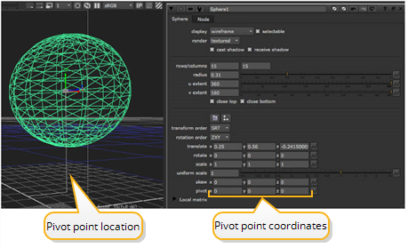

当您对对象的位置、缩放和旋转进行更改时，这些更改发生在对象的原点或 枢轴 。默认情况下，轴心点位于对象局部轴的交点处。
您可以偏移枢轴点，并将其移动到您喜欢的任何位置 -- 您甚至可以将其移动到对象的外部。随后相对于新的枢轴点位置发生局部变换。
| 1。 | 双击对象节点以显示其参数。 |
| 2. | 更改的值 枢轴 x , y ,和 z 字段以向任何方向移动局部轴。 |
|
 |
| 枢轴点位置和坐标。 |
对象的图形覆盖用直线指向枢轴点的位置。所有后续的局部变换都相对于此枢轴点发生。
定义了对象轴心点的位置后，可以使用对象的变换参数相对于轴心点平移、旋转、缩放和倾斜对象。
|
|